把 Canvas 放到 WebWorker 中去绘制
2024-07-18 22:43:06 · YinHao
前言
最近项目中需要绘制一块画布，大致上样子如下，就是绘制一堆人名在 Canvas 上（实际业务比这个复杂）
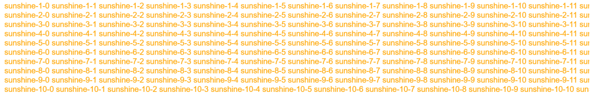大致代码如下:
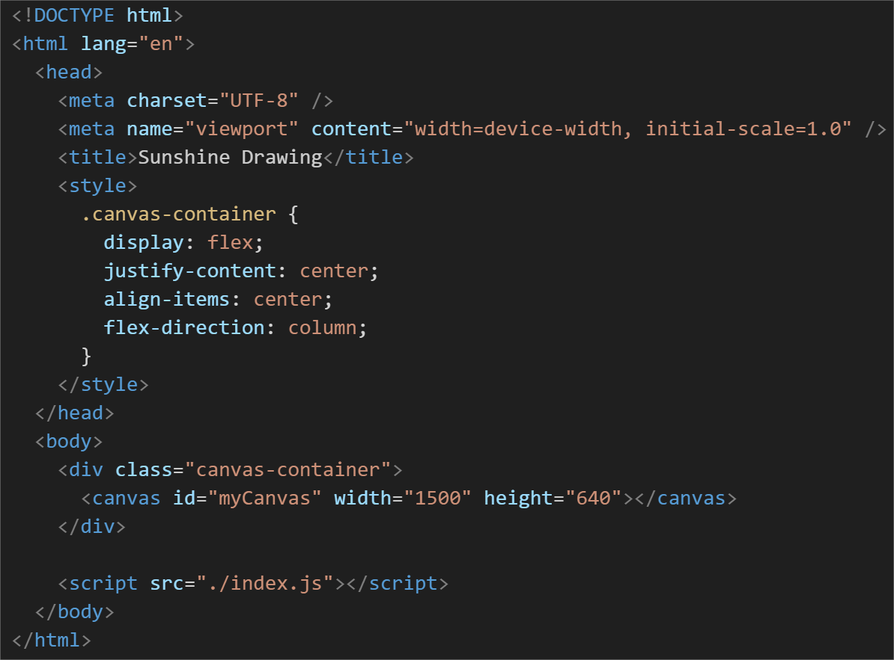页面肯定不止只有 Canvas 的逻辑，就比如我在绘制画布后，想去计算 1-100 的数字总和
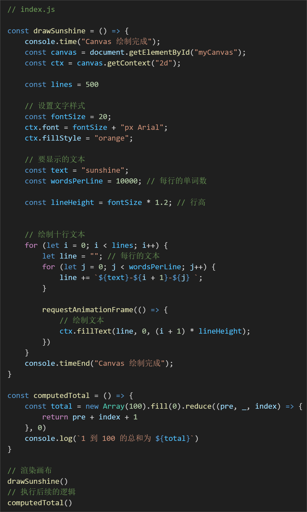但是最终发现，绘制画布耗费了很多时间，差不多有 1s 的时间，并且堵塞了主进程的代码，导致了我后续的逻辑被堵住了，下图可以看到，我的 computedTotal 结果是在画布绘制完菜执行完的

所以绘制画布的耗时过长，阻塞了后续的同步代码逻辑，这是不合理的，我们需要做优化
Web Worker？（离屏 Canvas）
我们平时在遇到这类情况的时候，十有八九第一时间都会想到 Web Worker
但是问题来了：正常来说，Web Worker 中可获取不了 DOM，做不了画布绘制呀
估计会有人想：那我们可以把 Canvas 的 DOM 节点传入 Web Worker 中吗？
可以试试
我们先准备一个 worker.js 来存放 Web Worker 的代码
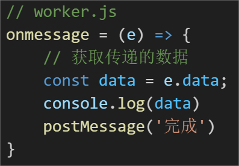接着在 index.js 中把 Canvas 的 DOM 节点传过去
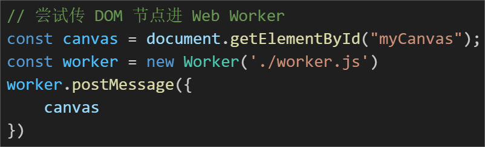发现会报错，因为 postMessage 传数据的时候会进行深拷贝，而 DOM 节点无法被深拷贝
那么传上下文过去可以吗？也可以试试
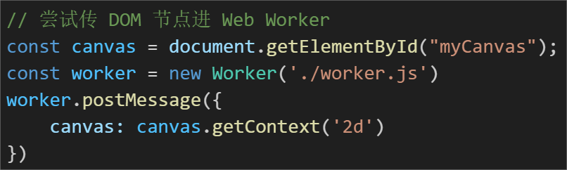可以发现，还是不行
canvas.transferControlToOffscreen
不得不说 JavaScript 是真的强大，早就为我们准备好了一个 API ，那就是 transferControlToOffscreen
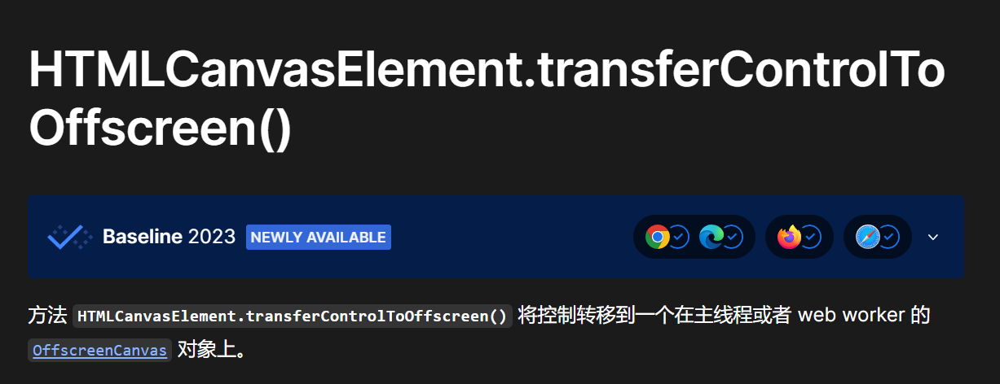有了这个 API ，我们就可以把 Canvas 的 DOM 节点以另一种方式传入 Web Worker 了！！！我们也能在 Web Worker 中去进行 Canvas 的绘制，进而优化主线程的代码执行效率！！
首先改造一下 drawSunshine，现在只需要传入 Canvas DOM，不需要在主线程去做绘制
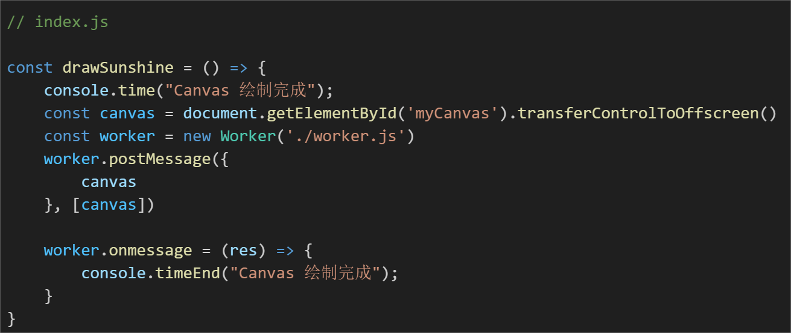接着我们在 worker.js 中去接收 DOM 节点，并进行画布绘制
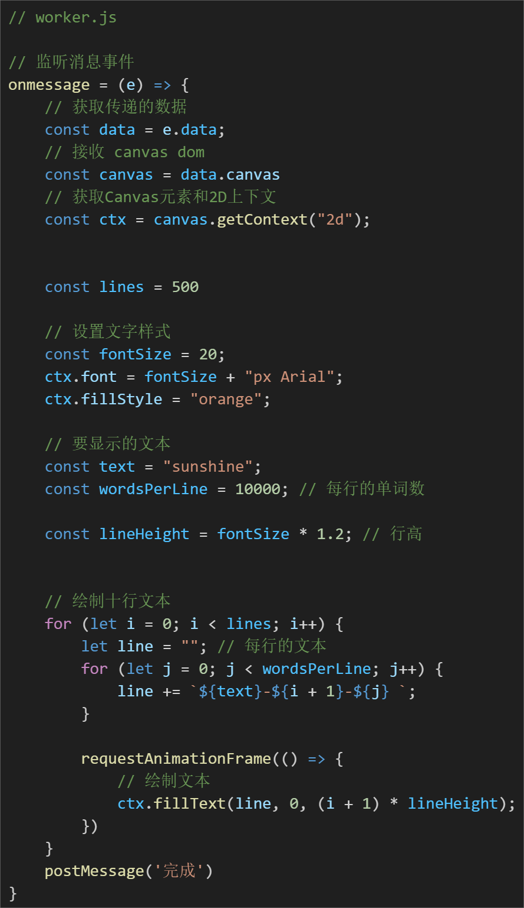最终可以看到，Canvas 的绘制并不会阻塞后续逻辑的执行
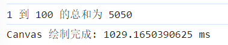 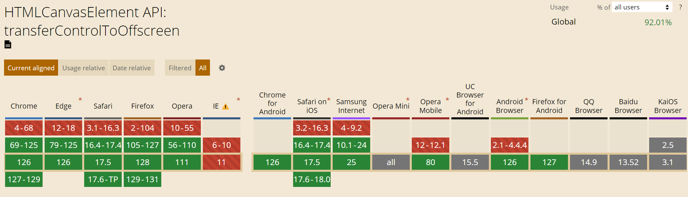